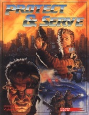

|  | Technical data |
| Supplement for the role-playing game Cyberpunk 2020, published by R. Talsorian Games (1991) | |
| Theme | Law and order in 2020 |
| Background quality | 3 / 5 |
| Scenario quality | 1 / 5 |
| Rules quality | 2 / 5 |
| Artworks quality | 1 / 5 |
| Writing quality | 2 / 5 |
This supplement could have been good. Indeed, the theme of law and order is more than interesting in a Cyberpunk context. Unfortunately, served by its translation, its layout and its pitiful illustrations, the book is not very attractive. Once past the aesthetic barrier, one realizes that the most interesting subjects have only been touched upon : gangs, organized crime, corporations, the new urban criminality, C-SWAT, and modern means of rehabilitation. The classification of crime priorities is interesting, the rest is unfortunately unremarkable. For those who would really like to give life to the representatives of law and order, get Berlin XVIII instead, you won't lose out in the process.
{kind=link}